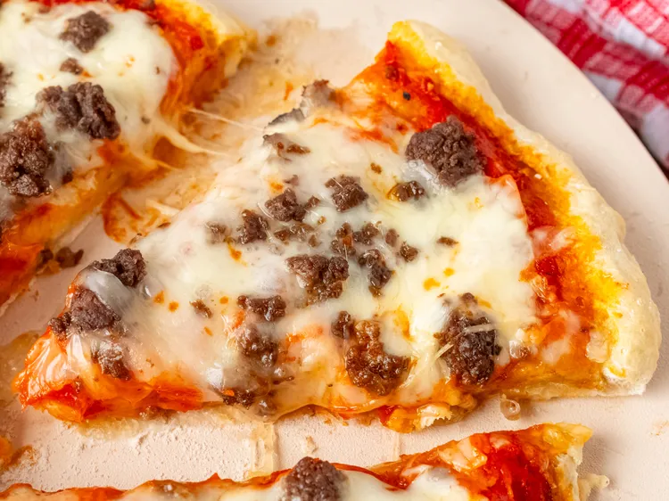

Ground Beef Pizza
Home

Ingredients
- 1 pizza dough
- 200g ground beef
- 1 cup of pizza sauce
- 1 cup of shredded mozzarella cheese
- 1/2 cup of sliced bell peppers
- 1/2 cup of sliced onions
Instructions
- Preheat the oven to 220°C.
- Roll out the pizza dough on a floured surface.
- Spread the pizza sauce evenly over the dough.
- Cook the ground beef in a pan until browned and drain excess fat.
- Sprinkle the cooked ground beef over the pizza sauce.
- Add sliced bell peppers and onions on top of the beef.
- Sprinkle shredded mozzarella cheese over the toppings.
-
Bake for 12-15 minutes or until the crust is golden and the cheese is
bubbly.